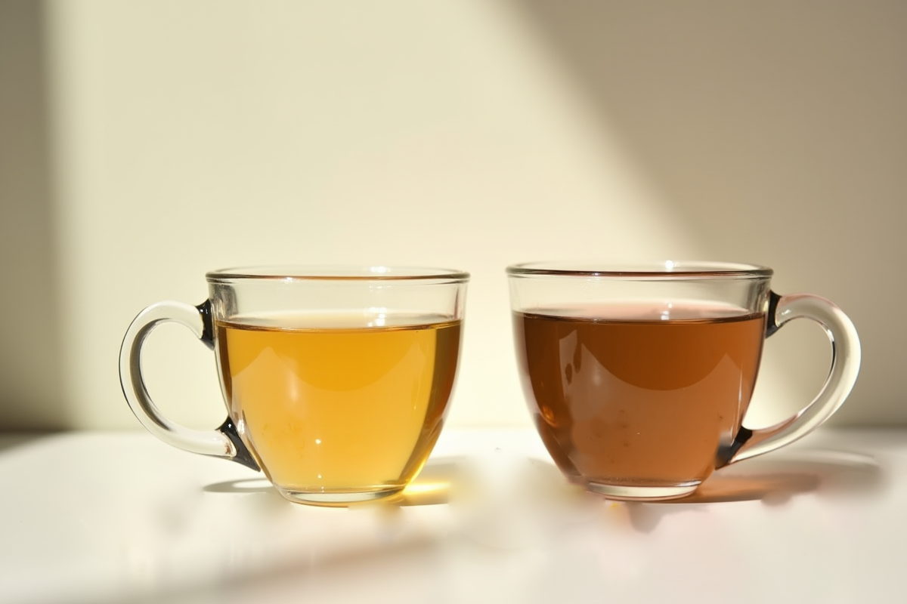

원료 가이드Ingredient Guide
원료가 다르면 한 잔이 달라집니다. 키트에 담긴 열두 가지 원료의 향 · 바디 · 여운을 비교해, 손이 가는 원료를 찾아보세요. T-01~06은 Taste, T-07~12는 Depth입니다.
Same leaves, different joys
같은 원료도, 즐기는 법은 다릅니다.
원료 하나하나의 성격을 아는 블렌더가 이것들을 섞어 향이 풍성한 한 잔을 만듭니다. 처음엔 전문가의 비율에서 시작하고, 그다음은 당신의 비율로.
